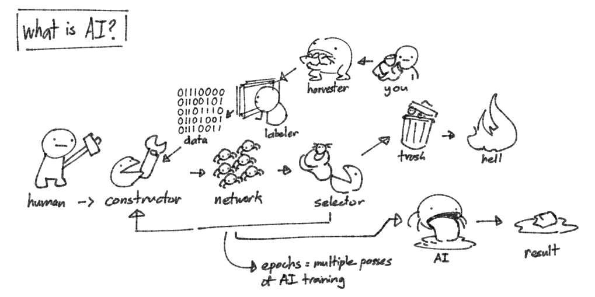

How do statistical machines create worlds? In this project, students
will create a machine learning algorithm that serves, describes, or
comments upon an aspect of their everyday life. Good designers
understand how to navigate, digest, and develop a perspective on the
technologies they use. Designers should be able to synthesize and
demonstrate clearly how a perspective emerged from their work.
Develop / communicate a perspective on the technology used within,
and create a polished case study that demonstrates your evolving
perspective on working with AI / data visualization.
details
tools
Google Colab, Stable Diffusion, Teachable Machine
deliverables
AI Generation Model
AI Recognition Model
Process Blog
Case Study
time of completion
Fall 2023
initialization
"in fact, computers don't know shit"

This project had us start off with using Teachable Machine to get us
acclimated with machine learning models and artificial level. My
immediate thought was to try and create an "artificial version of
myself." Something about making flawed versions of me felt very
appealing, so as a simple starter project I decided to create a
FUNNY or UNFUNNY image classifier . By feeding the AI a small dataset of what I found humorous, I got
the AI to "assume" (more on this later) what I thought of other
images.
Unsurprisingly, the AI was inaccurate. Because of all the :naruhodo:
images in the dataset (see
The Grand Naruhodo Count), the model
was heavily biased towards finding black and white images FUNNY. In
comparison, there were many pictures of people in the UNFUNNY
category, which led more realistic photos to be sorted together.
Over the course of the project introduction, we would continue to read
into and experiment more with AI. An in-class demo to create a snake
game with image recognition controls revealed to me how AI was fast to
train with relatively good results, but would still have glaring
flaws.
I knew much of the information from the lectures already through
exposure from social media, but they reinforced the negative aspects
of AI and model training, such as the intensive emissions and
disrespect of privacy and image rights. What was new to me though was
the negative impact across the entire chain, leading back to the
labeling of images.
In addition, there were projects like Triple chaser which were
legitimate positive uses of AI, compared to many of the intrusive and
abusive AI projects currently in circulation.
Takeaways
conceptualization
how does AI impact me?
The next few days of class would be spent discussing different
topics around AI, analyzing AI anatomy, and questioning if certain
designs should be using AI. All in all, I continued to develop my
existing negative opinion of AI, capitalizing off other’s work in
the dataset gathering, labeling, and generation processes. While the
technology itself was very interesting, 99% of the time it was in
the hands of bad actors.
I started developing ideas for my final model. Going on my previous
fun of creating "flawed mes", I brainstormed many different ideas
that involved the creation of a false self through assumptions and
the correction of myself through active monitoring.
While many of these involved my physical body or my daily routines,
they didn't feel personal - like I had a stake in the situation. The
idea that really captured my attention though involved AI art. With
the sudden rise of AI art generation through DALL-E and Midjourney,
my hobby as an artist on Twitter has seen numerous ups and downs
with human artists constantly fighting against "AI Artists" (those
air-quotes should show where I stand in this conversation). At the
time, I held the opinion that my art getting trained was inevitable
and I couldn't really do much to fight it. I do hold a generally
negative opinion over AI art generation but I really don't involve
myself in online discourse due to my current lack of knowledge over
the topic, though I have dabbled a bit in Stable Diffusion and
DALL-E to stay aware of the technology.
My plan was to gather a collection of art I've drawn so that I could
train a Stable Diffusion style LORA to generate bootleg versions of
my own art. I would then train a second image recognition model
using Teachable Machine with my art and AI generated art to see if
my recognition model could detect if art inputted was drawn by me or
not. AI counter-programs like Glaze and Nightshade always interested
me, and I knew of other AI image detectors but I was curious as to
how accurate they could be. With this concept in place, I was ready
for feedback from my peers.
Alfredo's Feedback
“Conversating if AI can replicate or learn to understand a style
from an artist and recreate/copy it. Creates an interesting aspect
of being the data that is being fed into this machine to create an
output, yet also being guided by the machine. I find the aspect that
you are creating the art that is being fed into the ai model to be
really interesting to follow and wondering if the art you create for
this will be affected by the project. Will some of the artwork
exaggerate certain features or styles to make it more apparent for
the machine to learn? I wonder what the machine will exaggerate or
highlight about your style that makes it so distinct.”
Alice's Feedback
“Interesting how you're examining how AI art recognizes art
"style"/legitimacy — I could see some long term implications if
style recognition turns positive, such as features to generate AI
art in a specific (person's) style, or if AI can be tricked into
believing an AI generated work is original artwork...? There could
be lots of debate on that...unless this is a feature that already
exists, oops. This makes me wonder if AI can recognize file
metadatas as well…”
A lot of this feedback ended up being interesting questions that I
would like to revisit on the completion of this project. I wasn’t
sure if Teachable Machine could recognize metadata, but I certainly
believe that some AI out there would be able to read the metadata of
images.
Takeaways
Postmortem Questions
manifestation
creating the monster
With critique in mind, I began work on training my first model, with
classes all being workdays from this point on. I already had Stable
Diffusion web UI, a free interface for Stable Diffusion that runs
locally, installed from previous AI escapades, so my first step was
to gather and label my training dataset.
To keep the style consistent, I decided to pick around 50 drawings
from 2022-2023 to train off of. I also knew that any more images
would make the training process exponentially longer and I was also
curious as to how accurate the model could be on a small dataset.
Because of how model training works though, I did still have to
train off a base style checkpoint, in my instance Anything 3.0,
along with whatever base Stable Diffusion was trained on, which made
me feel conflicted about this step. I was going about training my
style LORA ethically by only using my art, but the fact that I still
had to use others' work as a basis unsettled me slightly.
The next step was using inbuilt tools to label my art. Since
Anything 3.0 was trained using booru (image boards, often used for
anime content) tags, I would have to do the same using BLIP
captioning. The process was simple, I just had to throw my images
in, tweak some numbers, and wait for the program to process
everything. Roughly 30 minutes later and my images were done, and
the results were pretty surprising. Overall the tags were fairly
accurate, with only one mis-gendering as a noticeable error. What
was more significant though were some of tags. The AI seemed to need
to mention breasts, cleavage, and large breasts, which does seem to
follow with the average human booru tagging habits, but regardless
was still funny to look at.
With tagging done, I moved on to training the model. After running
some programs for an hour, I was met with the issue that I was just
too broke to train a model locally. My GPU, a 4GB 1050TI, was just
too weak and was actively rejected by the training program, which
surprised me since I thought it would just let me run it for longer
to achieve the same result. I ended up using a Google Colab cloud
GPU to train my model, which ended up only taking an hour to
complete. The entire process was well documented, which grew my
belief that AI was actually fairly easy to train because of all the
community built tools available.
As the model was training, it would spit out sample images for each
of the training epochs, and I was shocked by only the midpoint. Some
aspects were still rough, but the model was able to capture how I
drew eyes and separate hair strands. The training would continue to
epoch 15, at which the influence of my style became too strong and
began creating distortions.
At this point I was already in a state of horror and amazement, but
I proceeded to test the model at different epochs and strengths to
find the best combination. With the model complete, I switched to
running my local install of Stable Diffusion and began generating
Strength/Epoch plots to see what would give me the most accurate
style imitation while avoiding the distortions seen earlier. This
process ended up taking several hours, with me leaving it overnight
to run. I woke up to my completed tests and observed the results.
Overall, the lower right quadrants of both tests looked to be the
most accurate, but some of the minor details were more interesting
to me. The ones at the far bottom right were actively taking full
inspiration from some of the training pictures, such as the 2
character composition or position of the arm. This was very
interesting as I felt like I was finally grasping how AI "copies"
from its dataset.
At this point, I realized that I had included images that I had
drawn of my friends' characters. Even though I was still the artist,
and this model would never be interacting outside of my computer I
felt very bad about even using my friends ideas to train my model.
Regardless of this thought, I pushed forward with testing the model.
Takeaways
generation
stitching together amalgamations of my art
Now that the training was done, I began to experiment with various
prompts. After generating a few one off images with random prompts, I
had the idea to use the generated prompts from the dataset and see
what was created.
What came out were what I could describe as bastardizations of my own
work. The AI was desperately trying to replicate my compositions, but
it could only go so far. The AI attempting to write words and ending
up with meaningless glyphs was pretty interesting, but what was more
concerning was the "sexification" of women in a lot of the
generations. I could only assume that it was due to the influence of
the Anything 3.0 model I had trained on, since it drew from boorus
that usually contain a large amount of NSFW artwork.
More experimentation with my style LORA at strengths way higher than
recommended resulted in interesting artwork corruption. Some of the
results were repulsive, but I recognized that this kind of inhuman
distortion could be harnessed in some way as its own work of art. The
aforementioned "sexification" also seemed to increase at higher
strengths.
As a test, I presented a grid of 1 of my own art and 24 AI artworks
based on the original to people unfamiliar with my art. I was able to
notice the difference in how certain parts were drawn, but around half
of my participants guessed wrong.
The more I generated, the more I noticed that all of the generated
images seemed to be pulling most of their "inspiration" from 4
specific images from the original dataset. This was honestly extremely
damning for me and my view of how AI steals artwork. There were some
pieces that were basically the EXACT same composition as my own, which
was incredibly alarming to see.
Finally, to prepare for the image recognition model, I used variable
prompts to generate a variety of pieces to be used for training, which
took several hours. Every one gave me an uncanny valley feeling as I
scrolled through hundreds of bootleg artworks. Each one of them was
just slightly off, and many had an extra degree of sexualization. An
overall a growing sense of dread formed from all of my testing. What
if there was just that "one guy", who decides to try and train and
profit off my work? 50 images was all it took to achieve a relatively
similar style.
Takeaways - Trainer
Takeaways - Trainee
identification
rock'em sock'em robots - 2023 edition
Like my previous explorations with Teachable Machine, getting the
skeleton of the model trained was very simple. After noticing the 4
"inspiration" pieces, I wanted my recognition model to be able to
detect